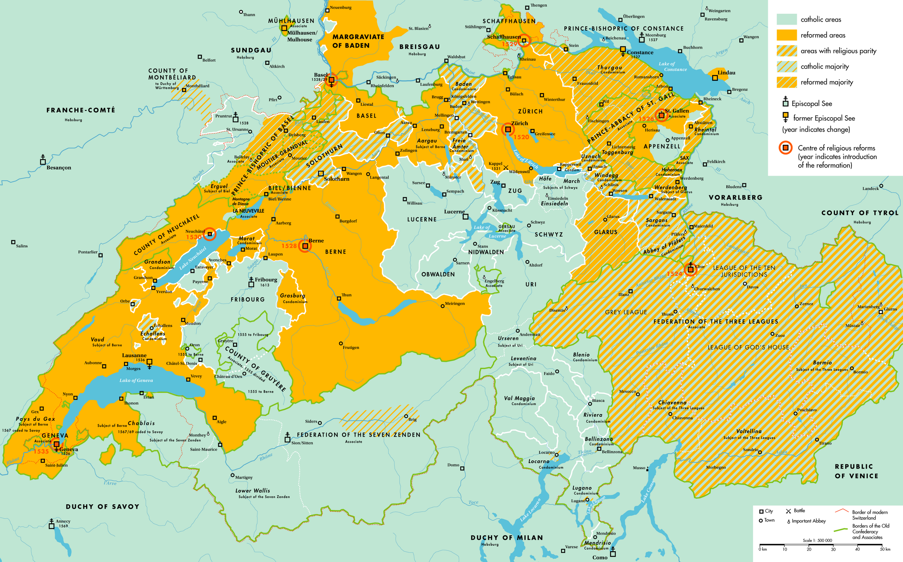

教会简史

教父时期（主后100-313年）
- 东方希腊语教会、西方拉丁语教会和东方叙利亚语教会（church of the east）
- 教会领袖从犹太人逐渐过渡到外邦人，被称为教父、监督或主教。
- 教会遍布罗马帝国和波斯萨珊帝国，信徒主要为外邦人，传播范围东至格鲁吉亚和阿富汗。
- 四福音书及保罗书信在主后130年被大部分教会接纳为正典，新约其他书卷逐步被认可。
- 主后397年迦太基会议正式确认新约27卷正典。
罗马帝国
- 君士坦丁（311年）后，罗马帝国基本上停止迫害基督徒。
- 主后313年，君士坦丁颁布《米兰敕令》，教会在罗马帝国合法化。
- 基督徒身份带来世俗好处，吸引大批异教徒挂名加入教会。
异端崛起

- 诺斯底派、亚流派等
- 为了维护教义的纯正，教会召开大公会议。
大公会议和分裂
- 尼西亚会议（325年）- 三位一体的教义
- 迦克墩大公会议（451年）- 神人二性的教义、处理亚历山大教派和安提阿教派的分歧
- 分裂出东方教会（church of the east）和东方东正教（oriental orthodox church）等
- 1054年，罗马教会和东正教正式分裂
马丁路德和宗教改革
- 1517年10月31日，马丁路德发表了九十五条反对出售赎罪卷的理由，他的追随者也被称为路德宗。
- 马丁路德发布大小要理问答（1529）
瑞士的宗教改革

- 始于苏黎世的慈云理改革
- 慈云理和马丁路德对圣餐的不同意见导致路德宗和改革宗的分歧
- 1536年法国人加尔文开始在日内瓦牧会
- 宗教改革的口号：因信称义、信徒皆祭司、五大唯独
改革宗的发展
- 日内瓦的加尔文开始了神学院并训练传道人
- 加尔文主义的教会：长老会（苏格兰）、清教徒（英美）、荷兰改革宗、低教（low church）的圣公会
- 早期受加尔文影响的教会：浸信会、公理会、弟兄会、圣公会等